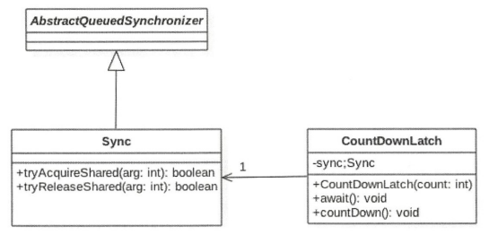
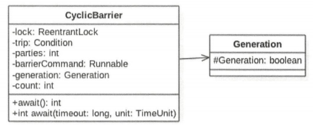
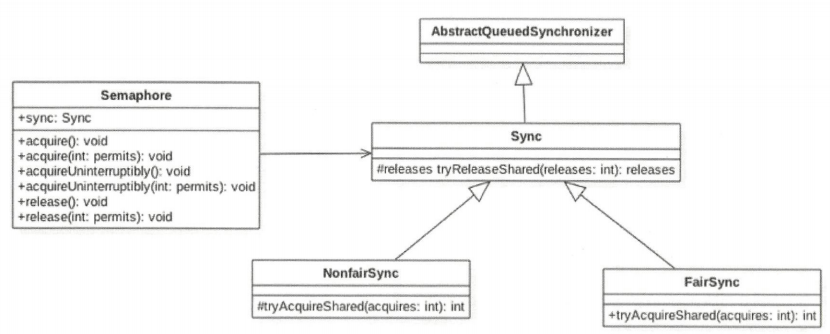

CountDownLatch 在日常开发中经常会遇到需要在主线程中开启多个线程去并行执行任务，并且主线程需要等待所有子线程执行完毕后再进行汇总的场景。在CountDownLatch出现之前一般都使用线程的join方法来实现这一点，但是在使用ExecutorService时我们就没办法了。
使用案例 1 2 3 4 5 6 7 8 9 10 11 12 13 14 15 16 17 18 19 20 21 22 23 24 25 26 27 28 29 30 31 public class CountDownLatchTest private static CountDownLatch countDownLatch = new CountDownLatch(2 ); public static void main (String[] args) throws InterruptedException ExecutorService executorService = Executors.newFixedThreadPool(2 ); executorService.submit(() -> { try { Thread.sleep(1000 ); System.out.println("child threadOne over!" ); } catch (InterruptedException e) { e.printStackTrace(); }finally { countDownLatch.countDown(); } }); executorService.submit(()->{ try { Thread.sleep(1000 ); System.out.println("child threadTwo over!" ); } catch (InterruptedException e) { e.printStackTrace(); }finally { countDownLatch.countDown(); } }); System.out.println("mainThread wait for all childThread over" ); countDownLatch.await(); System.out.println("all childThread over" ); executorService.shutdown(); } }
1 2 3 4 5 输出结果如下： mainThread wait for all childThread over child threadTwo over! child threadOne over! all childThread over
在如上代码中，因为有两个子线程所以构造函数传入参数为2。主线程调用CountDownLatch.await()后会被阻塞，子线程执行完毕后调用countDownLatch.countDown()使内部计数器(state)减1，所有子线程执行完毕后计数器为0，此时主线程的await方法才会返回。
实现原理 CountDownLatch基于AQS实现。

构造方法 1 2 3 4 5 6 7 8 9 10 11 private final Sync sync;public CountDownLatch (int count) if (count < 0 ) throw new IllegalArgumentException("count < 0" ); this .sync = new Sync(count); } Sync(int count) { setState(count); }
由构造方法可知CountDownLatch的计数器实际就是AQS的state。
void await() 调用await后当前线程被阻塞，只有当计数器值为0或者被中断该方法才会返回。
1 2 3 4 5 6 7 8 9 10 11 12 13 14 15 public void await () throws InterruptedException sync.acquireSharedInterruptibly(1 ); } public final void acquireSharedInterruptibly (int arg) throws InterruptedException { if (Thread.interrupted()) throw new InterruptedException(); if (tryAcquireShared(arg) < 0 ) doAcquireSharedInterruptibly(arg); } protected int tryAcquireShared (int acquires) return (getState() == 0 ) ? 1 : -1 ; }
boolean await(long timeout, TimeUnit unit) 相比void await()多了一个超时设置，设置的timeout时间到了，因为超时而返回false。
void countDown() 线程调用该方法后，计数器值减1，减1后若计数器为0则唤醒所有 因调用await方法而被阻塞的线程。
1 2 3 4 5 6 7 8 9 10 11 12 13 14 15 16 17 18 19 20 21 22 23 24 public void countDown () sync.releaseShared(1 ); } public final boolean releaseShared (int arg) if (tryReleaseShared(arg)) { doReleaseShared(); return true ; } return false ; } protected boolean tryReleaseShared (int releases) for (;;) { int c = getState(); if (c == 0 ) return false ; int nextc = c-1 ; if (compareAndSetState(c, nextc)) return nextc == 0 ; } }
long getCount() 获取state的值，该方法一般用于测试。
CyclicBarrier CountDownLatch的计数器是一次性的，当计数器值为0后，再调用await和countdown方法均会立即返回。为了满足计数器可以重置的需要，这才有了CyclicBarrier（回环屏障）。屏障的含义是：当线程调用await方法就会被阻塞，这个阻塞点就称为屏障点，当所有线程都调用了await方法后，线程就会冲破屏障，所有线程被唤醒继续向下执行（注意：最后一个调用await的线程不会被阻塞）。回环的含义是：所有线程到达屏障点后，CyclicBarrier的状态会被重置，因此它可以被重用。
使用案例 下面的例子实现的是：使用两个线程执行一个被分解的任务，两个线程并发执行任务的两个步骤后再由CyclicBarrier汇总。
1 2 3 4 5 6 7 8 9 10 11 12 13 14 15 16 17 18 19 20 21 22 23 24 25 26 27 28 29 30 31 32 33 34 public class CyclicBarrierTest private static CyclicBarrier cyclicBarrier = new CyclicBarrier(2 , new Runnable() { @Override public void run () System.out.println(Thread.currentThread().getName() + ": task merge result" ); } }); public static void main (String[] args) throws InterruptedException ExecutorService executorService = Executors.newFixedThreadPool(2 ); executorService.submit(() -> { try { System.out.println(Thread.currentThread().getName() + ": task step-1" ); System.out.println(Thread.currentThread().getName() + ": enter in barrier" ); cyclicBarrier.await(); System.out.println(Thread.currentThread().getName() + ": out from barrier" ); } catch (Exception e) { e.printStackTrace(); } }); executorService.submit(() -> { try { System.out.println(Thread.currentThread().getName() + ": task step-2" ); System.out.println(Thread.currentThread().getName() + ": enter in barrier" ); cyclicBarrier.await(); System.out.println(Thread.currentThread().getName() + ": out from barrier" ); } catch (Exception e) { e.printStackTrace(); } }); executorService.shutdown(); } }
1 2 3 4 5 6 7 pool-1-thread-1: task step-1 pool-1-thread-1: enter in barrier pool-1-thread-2: task step-2 pool-1-thread-2: enter in barrier pool-1-thread-2: task merge result pool-1-thread-1: out from barrier pool-1-thread-2: out from barrier
CyclicBarrier的构造方法参数列表中，第一个参数是计数器的初始值，第二个参数Runnable是当计数器值为0时由CyclicBarrier执行的任务。
在线程中CyclicBarrier对象调用await方法后，其计数器值-1，若此时计数器值不为0，当前线程被阻塞；若计数器值为0，则执行CyclicBarrier构造方法中传入的任务，然后唤醒条件队列中所有阻塞线程，重置计数器并新建Generation（重置broken标志）。
以下例子体现了CyclicBarrier的可复用性（所谓回环）：
以下任务被分为三个阶段，由两个线程并发执行该任务，只有当两个线程都完成了step1后才能进入step2，只有当两个线程都完成了step2才能进入step3。
1 2 3 4 5 6 7 8 9 10 11 12 13 14 15 16 17 18 19 20 21 22 23 24 25 26 27 28 29 30 31 public class CyclicBarrierTest2 private static CyclicBarrier cyclicBarrier = new CyclicBarrier(2 ); public static void main (String[] args) throws InterruptedException ExecutorService executorService = Executors.newFixedThreadPool(2 ); executorService.submit(() -> { try { System.out.println(Thread.currentThread().getName() + ": step-1" ); cyclicBarrier.await(); System.out.println(Thread.currentThread().getName() + ": step-2" ); cyclicBarrier.await(); System.out.println(Thread.currentThread().getName() + ": step-3" ); } catch (Exception e) { e.printStackTrace(); } }); executorService.submit(() -> { try { System.out.println(Thread.currentThread().getName() + ": step-1" ); cyclicBarrier.await(); System.out.println(Thread.currentThread().getName() + ": step-2" ); cyclicBarrier.await(); System.out.println(Thread.currentThread().getName() + ": step-3" ); } catch (Exception e) { e.printStackTrace(); } }); executorService.shutdown(); } }
1 2 3 4 5 6 pool-1-thread-1: step-1 pool-1-thread-2: step-1 pool-1-thread-2: step-2 pool-1-thread-1: step-2 pool-1-thread-1: step-3 pool-1-thread-2: step-3
实现原理 CyclicBarrier基于ReentrantLock实现。

parties用于记录线程个数，当parties个线程都调用await方法后所有线程才会冲破屏障点。count才是真正的计数器，一开始等于parties，每当有线程调用await方法后就-1，当count==0时所有线程都到了屏障点，此时会重置count的值为parties。
独占锁lock首先保证了更新计数器count的原子性，另外使用lock的条件变量trip支持线程间同步操作。
最后，在Generation对象内部有一个变量broken，用于记录当前屏障是否被打破。
构造方法 1 2 3 4 5 6 7 8 9 10 public CyclicBarrier (int parties, Runnable barrierAction) if (parties <= 0 ) throw new IllegalArgumentException(); this .parties = parties; this .count = parties; this .barrierCommand = barrierAction; } public CyclicBarrier (int parties) this (parties, null ); }
int await() 1 2 3 4 5 6 7 8 public int await () throws InterruptedException, BrokenBarrierException { try { return dowait(false , 0L ); } catch (TimeoutException toe) { throw new Error(toe); } }
boolean await(long timeout, TimeUnit unit) 1 2 3 4 5 6 public int await (long timeout, TimeUnit unit) throws InterruptedException, BrokenBarrierException, TimeoutException { return dowait(true , unit.toNanos(timeout)); }
超时返回。
int dowait(boolean timed, long nanos) 1 2 3 4 5 6 7 8 9 10 11 12 13 14 15 16 17 18 19 20 21 22 23 24 25 26 27 28 29 30 31 32 33 34 35 36 37 38 39 40 41 42 43 private int dowait (boolean timed, long nanos) throws InterruptedException, BrokenBarrierException, TimeoutException { final ReentrantLock lock = this .lock; lock.lock(); try { ... int index = --count; if (index == 0 ) { boolean ranAction = false ; try { final Runnable command = barrierCommand; if (command != null ) command.run(); ranAction = true ; nextGeneration(); return 0 ; } finally { if (!ranAction) breakBarrier(); } } for (;;) { try { if (!timed) trip.await(); else if (nanos > 0L ) nanos = trip.awaitNanos(nanos); } catch (InterruptedException ie) { ... } ... } } finally { lock.unlock(); } }
1 2 3 4 5 6 7 private void nextGeneration () trip.signalAll(); count = parties; generation = new Generation(); }
Semaphore Semaphore称为计数信号量，它允许n个任务同时访问某个资源，可以将信号量看做是在向外分发使用资源的许可证，只有成功获取许可证，才能使用资源。
使用案例 Semaphore可以用于做流量控制，特别公用资源有限的应用场景，比如数据库连接。假如有一个需求，要读取几万个文件的数据，因为都是IO密集型任务，我们可以启动几十个线程并发的读取，但是如果读到内存后，还需要存储到数据库中，而数据库的连接数只有10个，这时我们必须控制只有十个线程同时获取数据库连接保存数据，否则会报错无法获取数据库连接。这个时候，我们就可以使用Semaphore来做流控，代码如下：
1 2 3 4 5 6 7 8 9 10 11 12 13 14 15 16 17 18 19 20 21 22 23 24 25 26 public class SemaphoreTest private static final int THREAD_COUNT = 30 ; private static ExecutorService threadPool = Executors .newFixedThreadPool(THREAD_COUNT); private static Semaphore s = new Semaphore(10 ); public static void main (String[] args) for (int i = 0 ; i < THREAD_COUNT; i++) { threadPool.execute(new Runnable() { @Override public void run () try { s.acquire(); s.release(); } catch (InterruptedException e) { } } }); } threadPool.shutdown(); } }
实现原理 Semaphore基于AQS实现。

构造方法 1 2 3 4 5 6 7 8 9 10 11 12 13 14 15 16 17 18 19 public Semaphore (int permits) sync = new NonfairSync(permits); } public Semaphore (int permits, boolean fair) sync = fair ? new FairSync(permits) : new NonfairSync(permits); } Sync(int permits) { setState(permits); } NonfairSync(int permits) { super (permits); } FairSync(int permits) { super (permits); }
构造方法传入许可证数量，许可证数量对应于AQS中的state，默认采用非公平策略。
acquire 在当前线程调用该方法后，若当前许可证个数大于0，则许可证个数减1，然后方法返回；若许可证个数等于0，则当前线程会被放入AQS阻塞队列。
该方法可被中断。
acquire(int permits) 在当前线程调用该方法后，若当前许可证个数大于0，则许可证个数减permits，然后方法返回；若许可证个数等于0，则当前线程会被放入AQS阻塞队列。
该方法可被中断。
release 许可证个数加1，并根据公平策略在AQS阻塞队列中选择一个“许可证个数可以被满足”的线程唤醒。
release(int permits) 许可证个数加permits。
Phaser Phaser是JDK 7新增的一个同步辅助类，它可以实现CyclicBarrier和CountDownLatch类似的功能，而且它支持对任务的动态调整，并支持分层结构来达到更高的吞吐量。
Exchanger Exchanger是用于线程协作的工具类, 主要用于两个线程之间的数据交换。